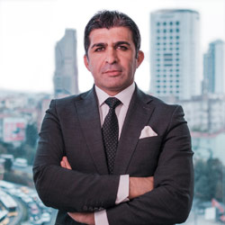

Online Danışmanlık Sistemi Özellikleri
Bilgisayar, tablet ve mobil cihazlardan herhangi bir eklenti indirmenize gerek olmaksızın sistemi kullanabilirsiniz.
Görüşmeler esnasında ses veya görüntü kaydı alınmamaktadır.
Görüşme esnasında görüntünüzü gizleyebilirsiniz.
Randevunuzu 30 dakika öncesine kadar iptal edip ödemenizin iadesini sağlayabilirsiniz.
256Bit SSL ile korunan sitemizde ödemenizi ve görüşmelerinizi güvenle gerçekleştirebilirsiniz.
AVUKATLAR
Tamer Kulaçoğlu
Kurucu Avukat
İstanbul Hukuk Fakültesi'nden 1990 yılında mezun olan Avukat Tamer Kulaçoğlu, avukatlık stajı ve askerlik görevini tamamlamasını müteakip 1993 yılında Kulaçoğlu Hukuk Bürosu'nu kurmuştur.
- Ticaret Hukuku
- Borçlar Hukuku
- Miras Hukuku
- Gayrimenkul Hukuku

Serkan Kartal
Ortak / Avukat - Arabulucu
2000 yılında Marmara Üniversitesi Hukuk Fakültesi'nden mezun olan Avukat Serkan Kartal, İstanbul Barosuna kayıtlı avukat olarak Kulaçoğlu Hukuk Bürosu'nda Yönetici – Ortak Avukat olarak çalışmalarına devam etmektedir.
- İş Hukuku
- Vergi Hukuku
- İdare Hukuku
- Arabuluculuk ve Uzlaşma
Erdal Hacıoğlu
Avukat
Avukat Erdal Hacıoğlu 2009 yılında Galatasaray Üniversitesi Hukuk Fakültesinden mezun olmuştur. Hacıoğlu, mezunu olduğu Galatasaray Üniversitesi'nde Kamu Hukuku alanında yüksek lisans eğitimi almıştır.
- Ceza Hukuku
- İdare Hukuku
- Bilişim Hukuku
Erencan Çemrek
Avukat
İstanbul Üniversitesi Hukuk Fakültesi'nden 2019 yılı Temmuz ayında "Yüksek Onur Derecesi" ile mezun olan Avukat Erencan Çemrek, başta Ticaret Hukuku, Borçlar Hukuku, ve Sözleşmeler Hukuku olmak üzere, hukukun önemli alanlarında çalışmalar yapmaktadır
- Ticaret Hukuku
- Borçlar Hukuku
- Sözleşmeler Hukuku
- Tüketici Hukuku
Emin Ulusoy
Avukat
İstanbul Üniversitesi Hukuk Fakültesi’nden 2019 Yılında "Yüksek Onur Derecesi" ile bölüm 4.sü olarak mezun olan Avukat Emin Ulusoy, başta Aile Hukuku, Borçlar Hukuku ve İcra İflas Hukuku olmak üzere, hukukun önemli alanlarında çalışmalar yapmaktadır.
- İcra ve İflas Hukuku
- Borçlar Hukuku
- Aile Hukuku
Umutcan Lüleci
Avukat
İstanbul Üniversitesi Hukuk Fakültesi'nden 2021 yılında "Yüksek Onur Derecesi" ile mezun olan Avukat Umutcan Lüleci, başta Ticaret Hukuku, Marka ve Rekabet Hukuku, İcra ve İflas Hukuku olmak üzere, hukukun önemli alanlarında çalışmalar yapmaktadır.
- Ticaret Hukuku
- Deniz Ticaret Hukuku
- Marka ve Rekabet Hukuku
- İcra ve İflas Hukuku
SIK SORULAN SORULAR
Hukuki danışmanlık ücretleri, Türkiye Barolar Birliği tarafından yıllık olarak belirlenen "Avukatlık Asgari Ücret Tarifesi" üzerinden hesaplanmakta olup 30 dakikalık görüşme ücreti 1200 ₺'dir.
Hukuki danışmanlık ve avukatlık hizmeti ihtiyacınızı, internet erişimizin olduğu heryerde, masaüstü bilgisayarınızdan, dizüstü bilgisayarınızdan, tabletinizden veya cep telefonunuzdan, dilediğiniz gün ve saatte, tercih ettiğiniz Kulaçoğlu Hukuk Bürosu avukatı ile canlı görüntülü görüşme yoluyla karşılamanızı sağlayacak bir platformdur.
online.Kulaçoğlu görüntülü hukuki danışmanlık platformu ile online hukuki danışmanlık hizmeti her yılın başında Resmi Gazete’de yayımlanan güncel TBB Avukatlık Asgari Ücret Tarifesine uygun olarak belirlenen ücret karşılığında sunulmaktadır. Tarifede belirtilen ücretler, hukuki danışmanlık hizmeti karşılığında avukatların talep edebilecekleri asgari ücretler olup, online.Kulaçoğlu üzerinden hukuki danışmanlık hizmeti almak için müvekkil tarafından tercih edilen avukatın yetkinliği ve tecrübesi paralelinde ücretler farklılık gösterebilir. Ücretlerin, ilgili tarifedeki değişikliklere ve sair gereklilere göre uyarlanma hak ve yetkisi münhasıran Kulaçoğlu Hukuk Bürosuna aittir.
online.Kulaçoğlu görüntülü hukuki danışmanlık platformu ile masaüstü bilgisayarınızdan, dizüstü bilgisayarınızdan, tabletinizden veya cep telefonunuzdan görüntülü hukuki danışmanlık ve avukatlık hizmeti alabilirsiniz.
online.Kulaçoğlu görüntülü hukuki danışmanlık platformu üzerinden aldığınız randevu gün ve saatinde, avukatınızla bu platform üzerinden video görüşme şeklinde hizmet alabilirsiniz. Yapılan tüm görüşmeler, KVKK mevzuatına uygun şekilde gerçekleştirilmekte olup görüşmelerin ses ve görüntü kaydı alınmamaktadır.
online.Kulaçoğlu hukuki danışmanlık platformu üzerinden, ister randevu oluşturma sürecinde isterse hukuki danışmanlık esnasında karşılıklı olarak belge gönderilebilmektedir. Gönderilen belgeler gerekli olması halinde ve gereklilik devam ettiği sürece yürürlükteki KVKK mevzuatına uygun şekilde depolanmakta, aksi takdirde mevzuata uygun şekilde silinmekte, yok edilmekte ya da anonim hale getirilmektedir. Konu ile ilgili daha detaylı bilgiye online.Kulaçoğlu Gizlilik Koşulları metninden ulaşabilirsiniz.
Randevu saatinizden 30 dakika öncesine kadar, hiçbir gerekçe göstermenize gerek olmaksızın görüşme talebinizden vazgeçebilirsiniz. Görüşme talebinizden vazgeçme beyanınız Kulaçoğlu Hukuk Bürosuna iletildiğinde derhal ücret iade süreciniz başlatılır. Ödeme yaptığınız bankanıza bağlı olarak birkaç gün içerisinde ödeme yaptığınız hesaba ücret iadeniz yansıtılacaktır.
online.Kulaçoğlu görüntülü hukuki danışmanlık platformundaki görüşmeleriniz kesinlikle kaydedilmez. Mesajlarınız da şifreleme yöntemiyle kilitli şekilde korunur. Kendinize dair verdiğiniz bilgiler ve/veya ilgili hukuki danışmanlık hizmeti kapsamında gönderdiğiniz belgeler online.Kulacoglu Gizlilik Koşulları çerçevesinde korunur. Konu ile ilgili daha detaylı bilgiye online.Kulacoglu Gizlilik Koşulları metninden ulaşabilirsiniz.
Her türlü sorunuz veya geri bildiriminiz için bizimle info@kulacoğlu.av.tr adresinden veya 0212 347 00 40 ve 0552 200 16 00 hatlarından irtibata geçebilirsiniz.